01 / CMAS
Дайвинг
Погружения - это сочетание спокойствия, подготовки и работы с риском. Под водой особенно хорошо понимаешь ценность дисциплины и четких процедур.
Portfolio
От исследования рынка и пользовательских проблем — до MVP, запуска, продаж и развития продукта. Каждый проект ниже показан как отдельная продуктовая глава: контекст, решения, результат и артефакт.
Product / Project Manager web-проектов
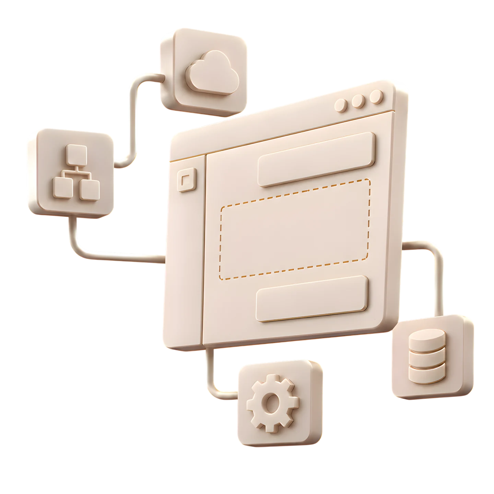
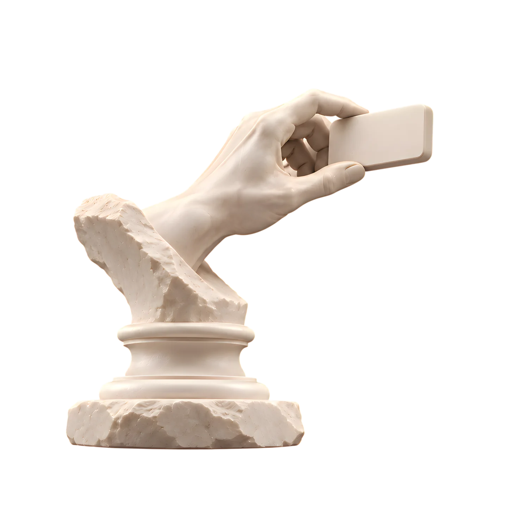
Сооснователь / Product Manager
Дети быстро вырастают из одежды. В некоторые периоды приходится обновлять гардероб каждый сезон
Собрал команду студентов на инициативной основе, разработал растущую одежду, полностью упаковал проект для инвестиций, провел более 20 питчингов на открытую аудиторию.
Победа в HSE Startup Cup, грант 1 млн ₽, разработан MVP.
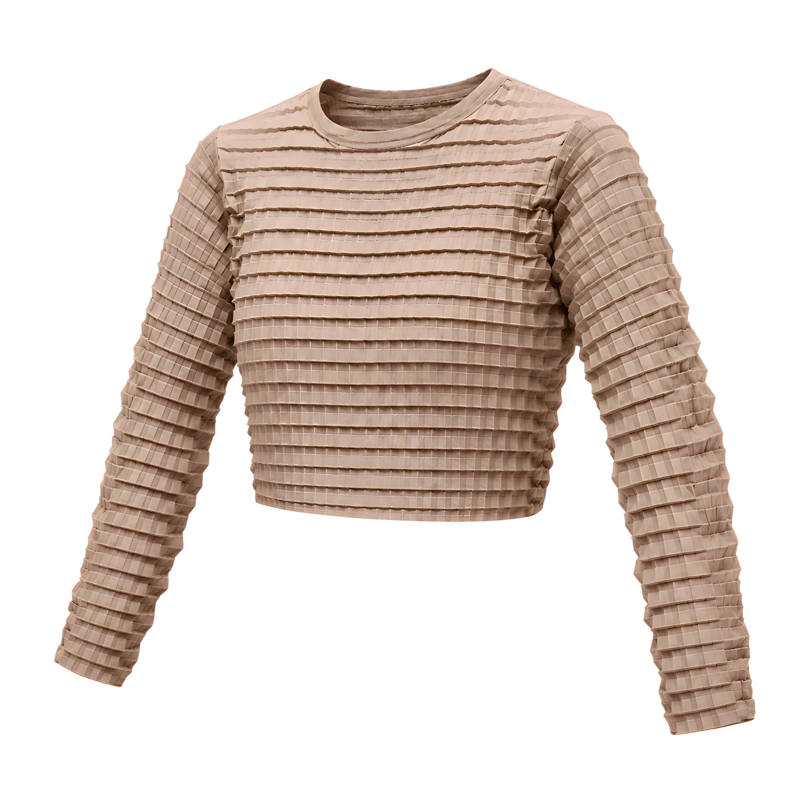
Основатель / Product Manager & Business Development
Разработать имиджевый продукт для студии дизайна интерьеров, который позволит охватить ЦА из премиум сегмента.
Собрал команду и создал глянцевый журнал об интерьерных решениях в люкс сегменте, договорился о контенте и статьях с ведущими брендами, создал дизайн, цифровую версию и напечатал физический тираж.
Продал рекламные размещения ещё до выхода журнала, напечатал тираж полностью на деньги с размещений.
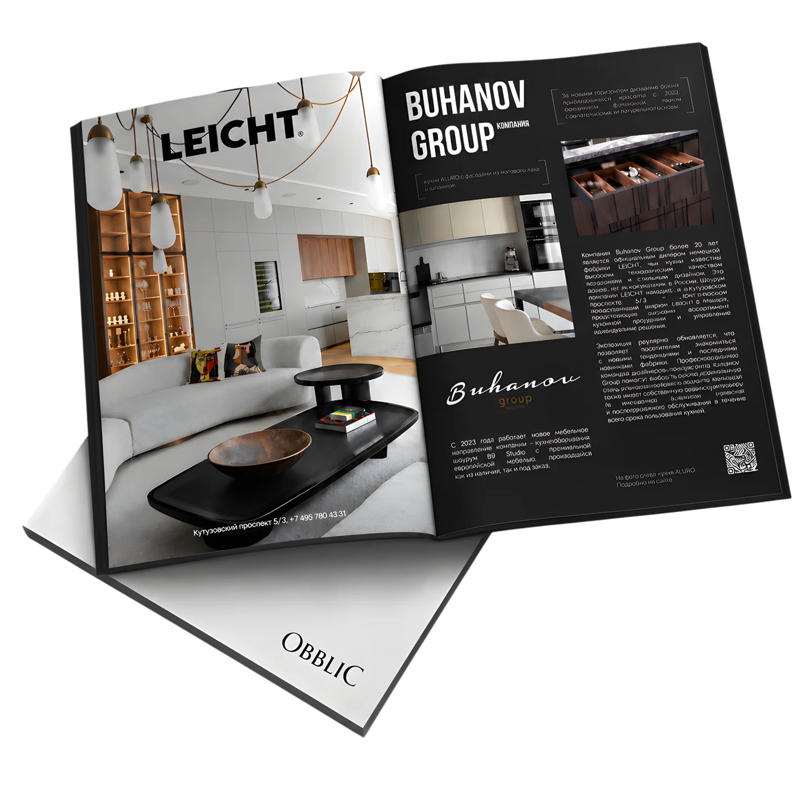
Носилки для экспресс-эвакуации / Product Owner
Подготовка к эвакуации занимает более 2 минут и требует перемещения пострадавшего — и то, и другое может оказаться критичным.
Разработали и пошили легкие носилки, которые носятся как часть униформы и разворачиваются по принципу парашютной системы. Протестировали решение с целевой аудиторией и доработали конструкцию под реальные условия использования.
Подготовка к эвакуации сокращена с более чем 2 минут до 10 секунд. Первая партия носилок отправилась спасать жизни.
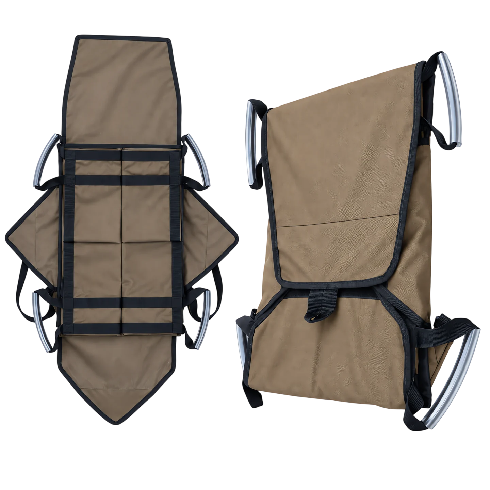
Создание банки, которую запустили в космос
В рамках запуска ракеты «Союз» согласовывалась рекламная интеграция. Одной из задач стало производство физического макета банки газировки, который должен был полететь на МКС.
Организовал производство макета: согласовывал конструкцию и материалы под требования Роскосмоса, работал с допусками по материалам и необходимой сертификацией.
Готовый макет банки был подготовлен к запуску, сертифицирован и полетел на МКС в рамках миссии «Союза».

Немного больше о моем подходе к жизни, спорте и вещах, которые формируют мой способ думать и работать.
Перейти на страницу обо мне↗Если хотите обсудить продукт, карьеру, запуск нового проекта или просто познакомиться — напишите мне.
Я люблю собирать продукты из неопределенности: находить проблему, формулировать гипотезу, договариваться с людьми и доводить идею до работающего результата. Вне работы мне нравятся занятия, где нужно одновременно думать и держать концентрацию. Там всё зависит только от тебя - это и есть свобода.
Каждый вид спорта скрывает в себе определенную философию, требует разного подхода и развития разных навыков. Увлечение разными видами спорта — это мой способ самопознания и возможность увидеть мир под разными углами.
Погружения - это сочетание спокойствия, подготовки и работы с риском. Под водой особенно хорошо понимаешь ценность дисциплины и четких процедур.
Здесь нужны скорость, баланс и умение быстро адаптироваться к условиям. Мне нравится ощущение контроля в динамичной среде.
Люблю за стратегию на ходу: нужно одновременно читать соперника и менять тактику по ходу игры.
Это про выбор оптимального маршрута, реакцию и умение принимать решения в условиях ограниченного времени и непредсказуемой среды.
Нравится быстрый цикл обучения: попробовал, ошибся, проанализировал, поднялся и пробуешь снова.
КМС по стрельбе и победитель чемпионата Красноярского края по лыжному ориентированию. Здесь особенно ценю концентрацию, точность и работу под давлением.
Communication / Learning / Decisions
Я отзывчив и неконфликтен. Разногласия и конфликты предпочитаю решать с холодной головой, не эскалируя, если это не требуется.
Отлично воспринимаю критику, особенно если она сопровождается предложениями. Сам привык давать решения вместе с критикой и того же жду от команды — считаю это залогом продуктивности и роста каждого в команде.
Умею активно слушать и задаю много вопросов. Убеждён, что спросить что-то простое и показаться глупым гораздо лучше, чем остаться без ответа.
Открыто выражаю мысли, считаю прямоту самым эффективным способом коммуникации. Отлично отношусь к прямолинейности в свой адрес.
Очень быстро разбираюсь в вещах, которых не знаю, активно обращаюсь к специалистам в своём окружении и быстро нахожу решения через людей и брейншторминг.
Испытываю неприязнь к пассивно-агрессивным людям, с открытую агрессию парирую выставленим границ, сменой фреймов и юмором.
Если вам близок мой подход или есть интересный продуктовый контекст — буду рад знакомству.
Собрал low-code студию и команду из 6 человек. Делали сайты, рассылки и воронки продаж для бизнеса и онлайн-проектов.
Почти каждый проект начинался с бизнес-задачи: привести заявки, принять оплату, запустить продажи. Я разбирался, кто пользователь, зачем он приходит на сайт и что ему нужно сделать.
Начинал с интервью с заказчиком, проводил JTBD-исследования и строил CJM. Из этого собирал пользовательский путь и требования к продукту.
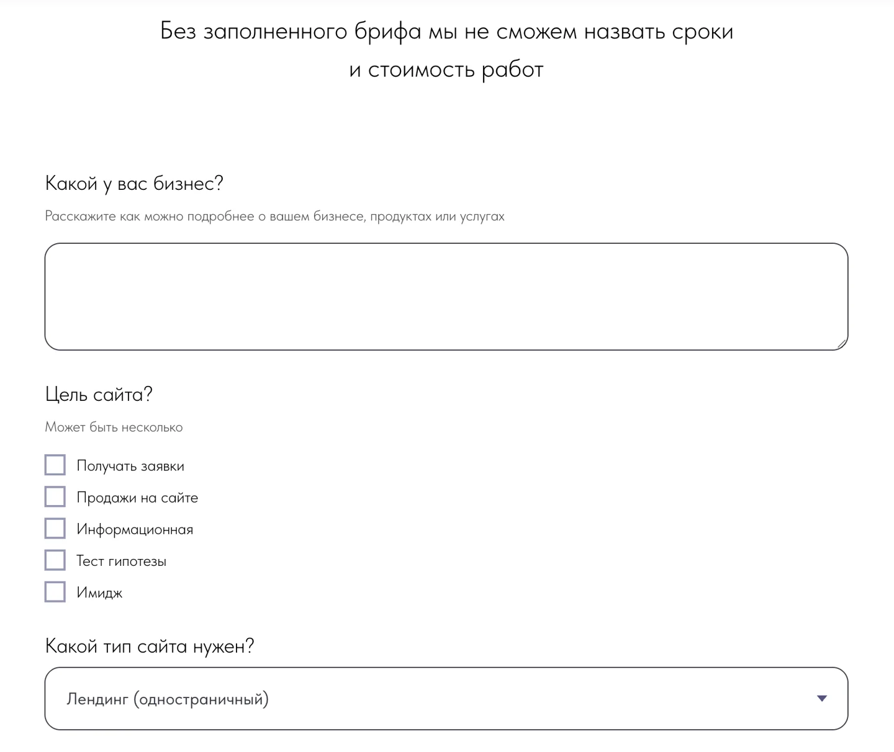
Собрал команду из 6 человек: веб- и граф-дизайнер, верстальщик, копирайтер, frontend-разработчик и интегратор.
Описывал User flow, Use cases и User Story Map, разбивал работу на задачи и фиксировал критерии приёмки. Отвечал за то, чтобы дизайн, контент и разработка сходились в одном пользовательском сценарии.
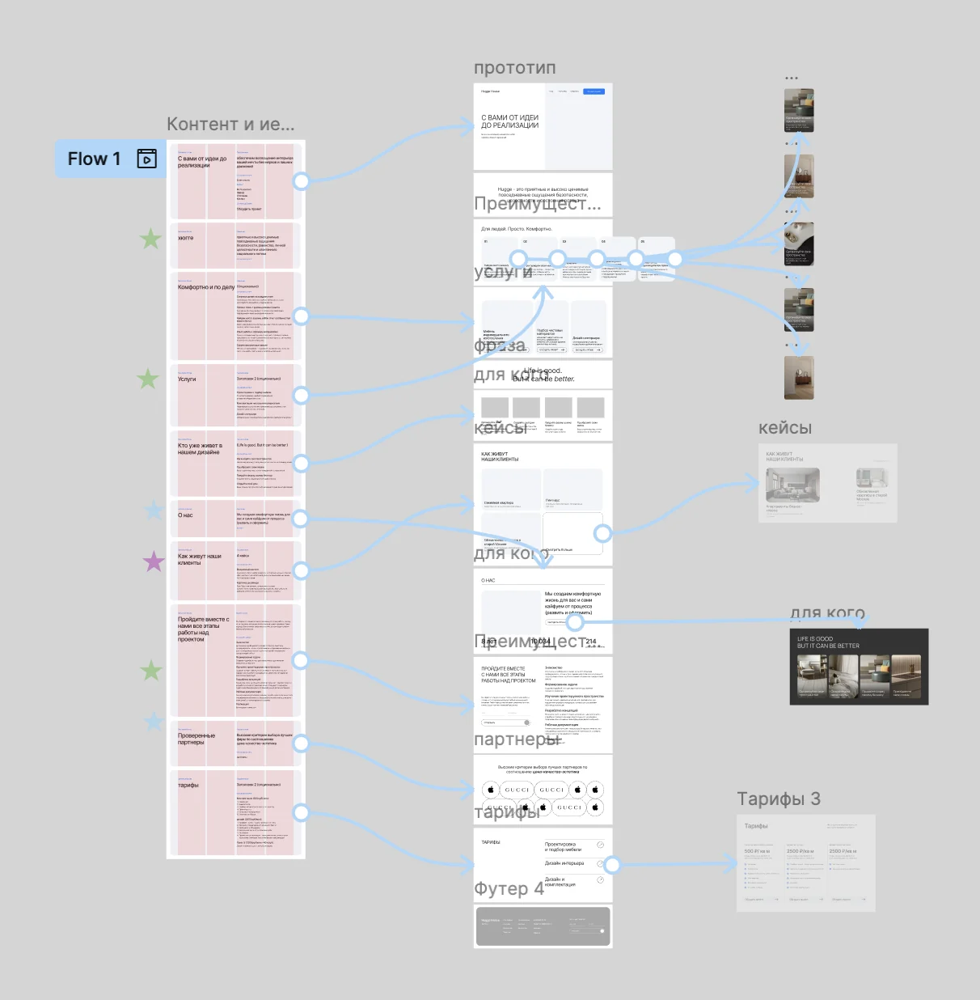
Собирали лендинги на Tilda, подключали системы оплаты, делали рассылки и воронки через UniSender.
Проверял адаптивность и путь от первого экрана до заявки или оплаты. После запуска смотрел поведение пользователей в Яндекс Метрике и Вебвизоре, находил места, где они останавливались.
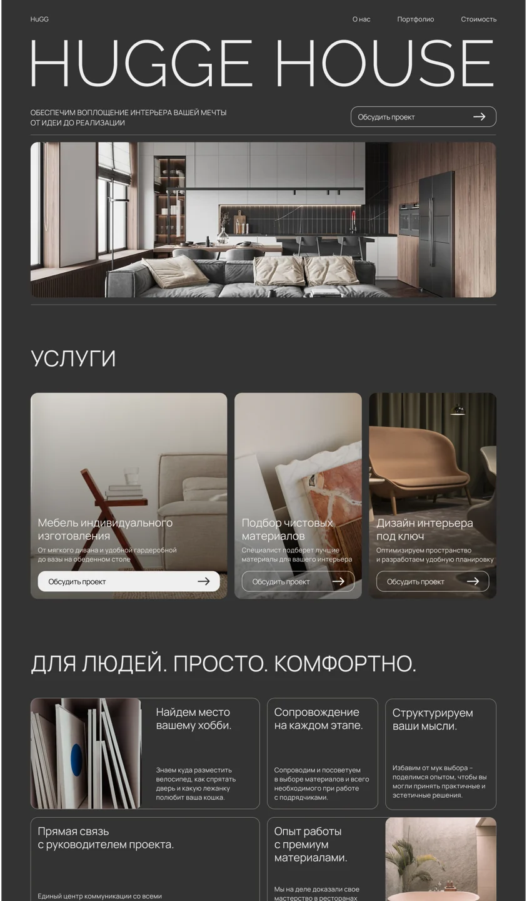
За время работы реализовал 30+ адаптивных сайтов. Проходил с проектами путь от бизнес-задачи и пользовательского сценария до разработки, запуска и дальнейшего сопровождения.
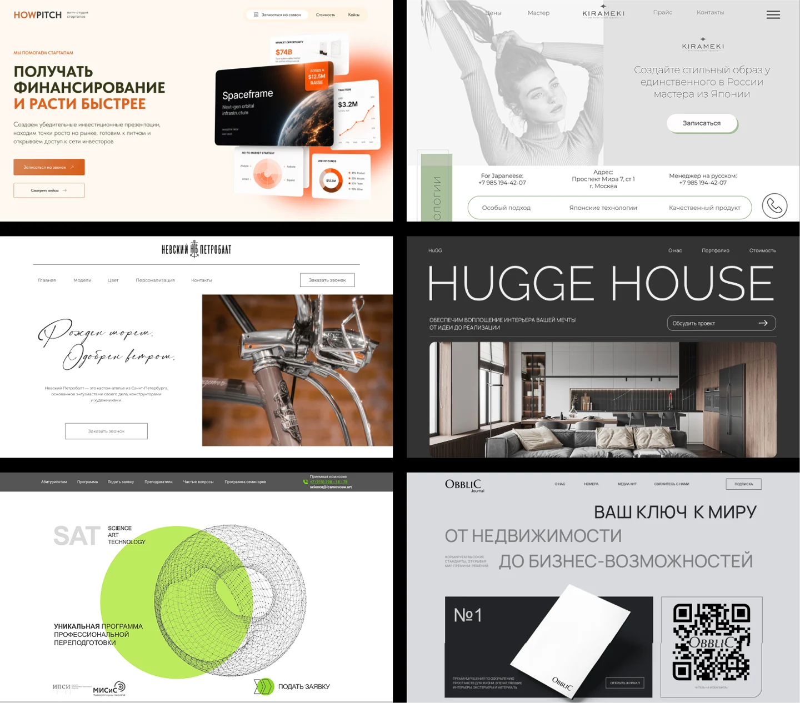
Low-code / Web
Можно обсудить задачу, структуру, пользовательский путь и запуск сайта — от идеи и прототипа до готовой адаптивной версии.
Одежда, которая растёт вместе с ребёнком. Проект, в котором я собрал команду, проверил спрос и довёл идею до кофты, увеличивающейся на 7 размеров.
Дети быстро вырастают из одежды — очень простая проблема, понятная каждому родителю. Идея была сделать одежду, которая будет расти вместе с ребёнком.
Провёл 18 глубинных интервью и получил через соцсети оплаты на 150 тыс. ₽ ещё до появления готового продукта.
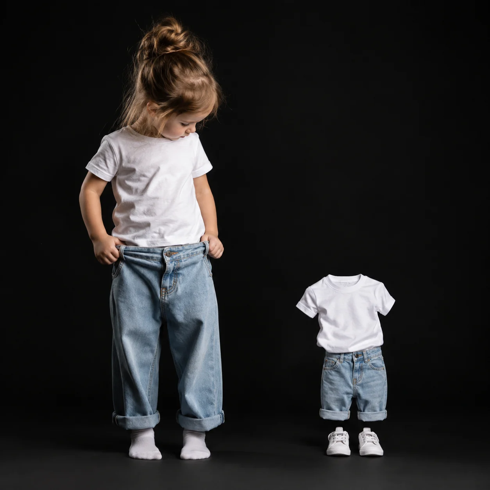
Собрал команду на инициативной основе: дизайнера одежды, экономиста, графического дизайнера и SMM-специалиста. Привлёк 2 менторов.
За дизайнером одежды пошёл в ВШД: договорился с преподавателем о проектной работе для студентов. Часть команды привлёк через майнор «Стартап как диплом» — за работу над проектом ребята получали зачётные единицы.
Моя задача была собрать весь проект воедино: разработать бизнес-план, привлечь финансы, организовать создание MVP и координировать команду.
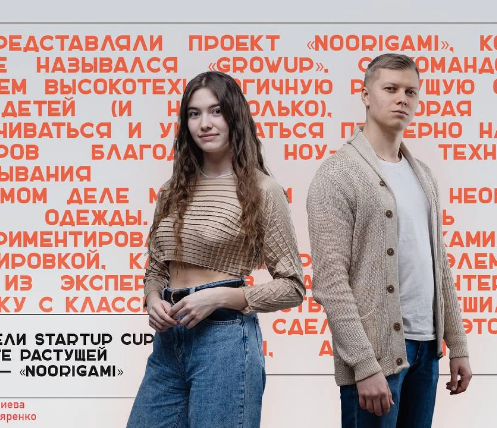
На отраслевых выставках нашли технологию складывания ткани под горячим прессом. Если сложить ткань определённым образом, получается гармошка, которая тянется в разные стороны и держит форму.
За 3 месяца провёл 200+ тестов материалов. Подбирали ткань и способ складывания, пока не получили кофточку, которая увеличивается на 7 размеров.
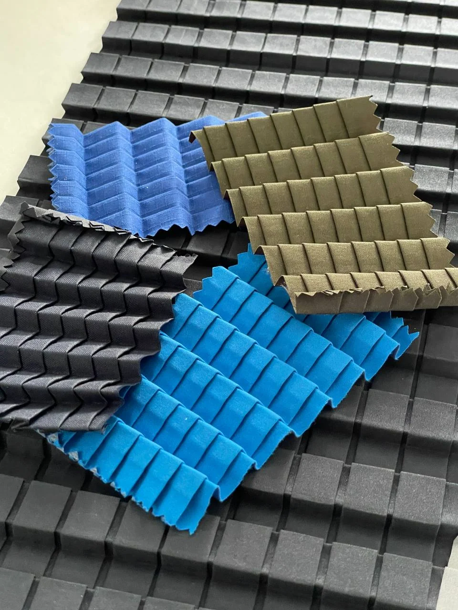
Подготовил проект к финансированию: анализ рынка, бизнес-план, презентация и первые предзаказы. Вместе с экономистом просчитали unit-экономику, точку безубыточности, срок окупаемости и план развития на 3 года.
С MVP выиграли HSE Startup Cup и привлекли грант Фонда содействия инновациям на 1 млн ₽. В финале на сцене надели детскую кофточку на взрослую девушку.
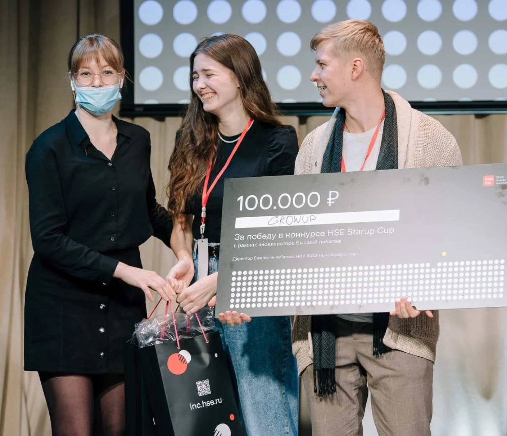
Провёл 20+ питчингов и публичных выступлений перед экспертами и инвесторами. В акселераторе у нас было по 3–4 созвона с менторами и специалистами в день.
После каждого созвона докручивали презентацию и питч, несколько раз выходили на прожарки. Так быстро получали обратную связь и успевали вносить изменения до следующей встречи.
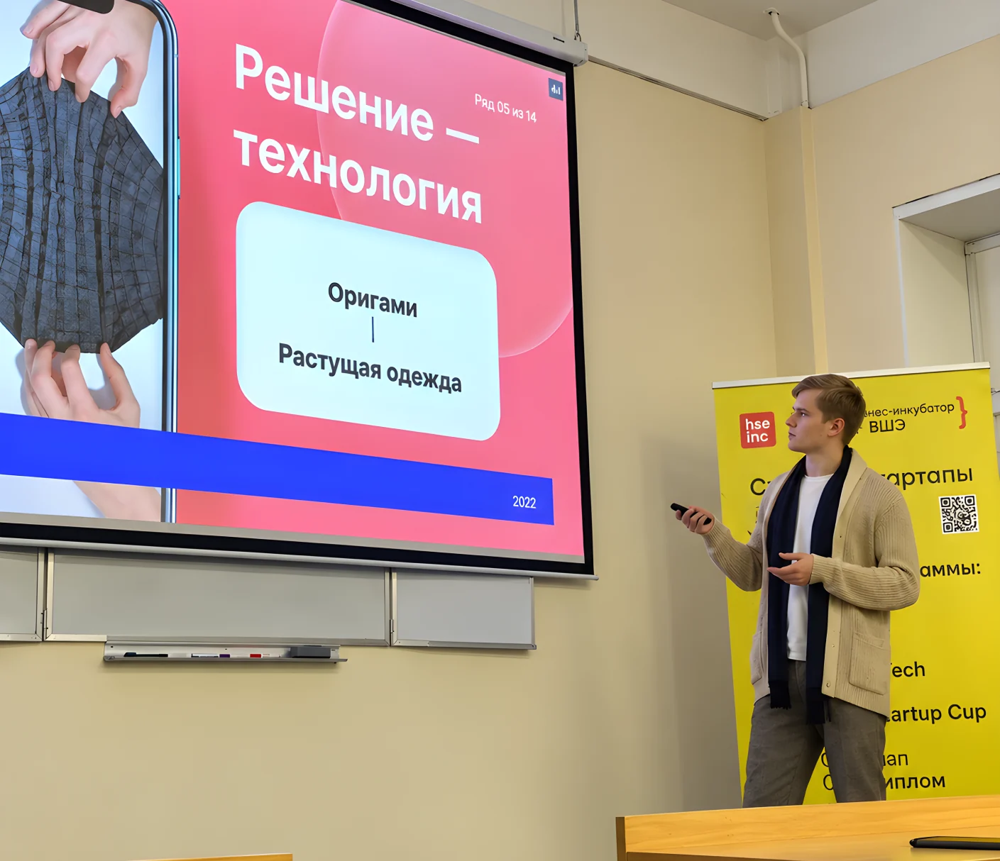
Мы сделали работающий MVP, привлекли грант и успешно закрыли отчётность. Разобрались в абсолютно незнакомой до этого нише, завели много новых знакомств и самое главное — от всей души повеселились)
Origami Wear / Product
Можно обсудить покупку функциональной одежды или индивидуальный пошив под ваши задачи, сценарий использования и предпочтения.
Интерьерный журнал для студии дизайна. Превратил рекламную задачу в отдельный продукт и продал первые размещения ещё до выхода тиража.
Задача была найти канал контакта с аудиторией люкс-сегмента для студии дизайна интерьеров.
Эти люди уже посещают дорогие рестораны и загородные клубы, пользуются премиальными услугами. Решил сделать продукт, с которым они будут взаимодействовать в привычных для себя местах.
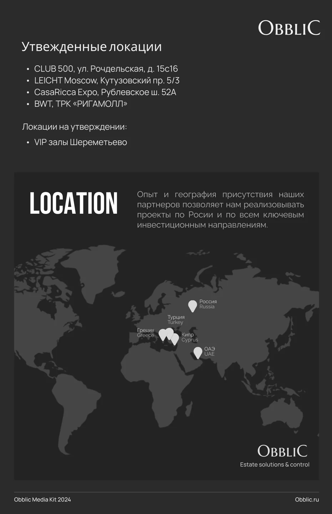
Выбрал интерьерный журнал, в котором студия дизайна будет представлена рядом с уже знакомыми аудитории брендами мебели, материалов и интерьерных решений.
Договорился с дистрибьюторами люкс-брендов: они давали фотографии и копирайтеров для статей в обмен на размещение. Так собрал контент для первого выпуска.
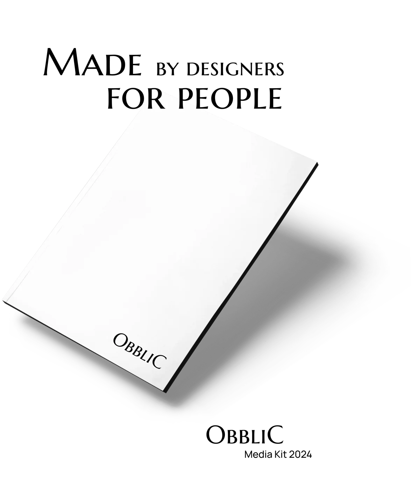
Разработал дизайн, привлёк верстальщика на добровольных началах и подготовил презентацию будущего журнала.
Через холодные звонки продал 5 рекламных разворотов ещё до выпуска. Эти продажи подтвердили спрос на размещения и полностью окупили первый тираж.
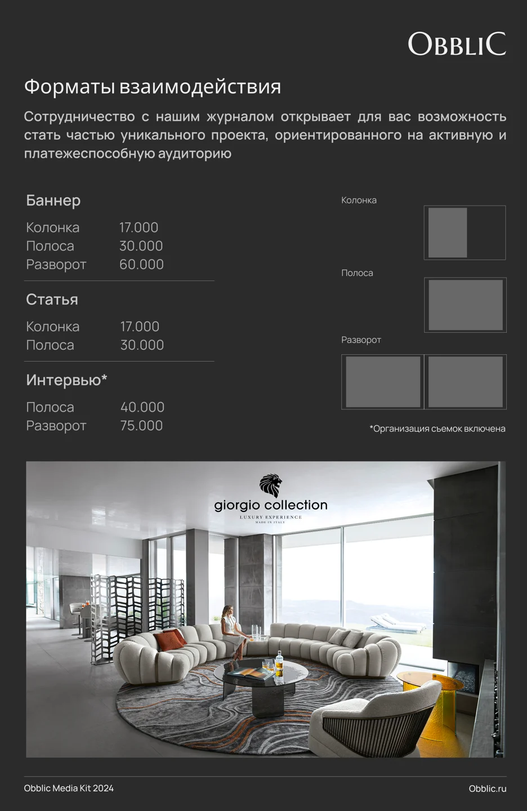
На выручку от рекламы выпустил первый тираж. Договорился о бесплатном размещении журнала в 15 заведениях и загородных клубах.
Сразу после выпуска продал журнал рекламному агентству за 4,5 млн ₽.

Носилки для экспресс-эвакуации, которые носятся на спине и раскрываются прямо под пострадавшим.
Классические носилки находились у медиков. Если эвакуацию нужно было начинать немедленно, подготовка занимала более 2 минут.
Ещё приходилось переворачивать и перемещать пострадавшего, чтобы уложить его на носилки. Нужно было сократить время подготовки и количество этих действий.
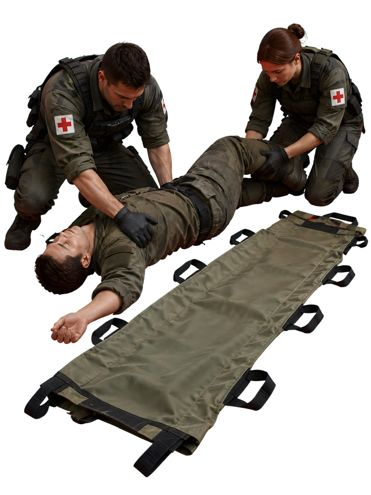
Разработал конструкцию, которая носится на спине и раскрывается по принципу парашютной системы прямо под пострадавшим. Носилки стали частью экипировки и сразу готовы к развёртыванию.
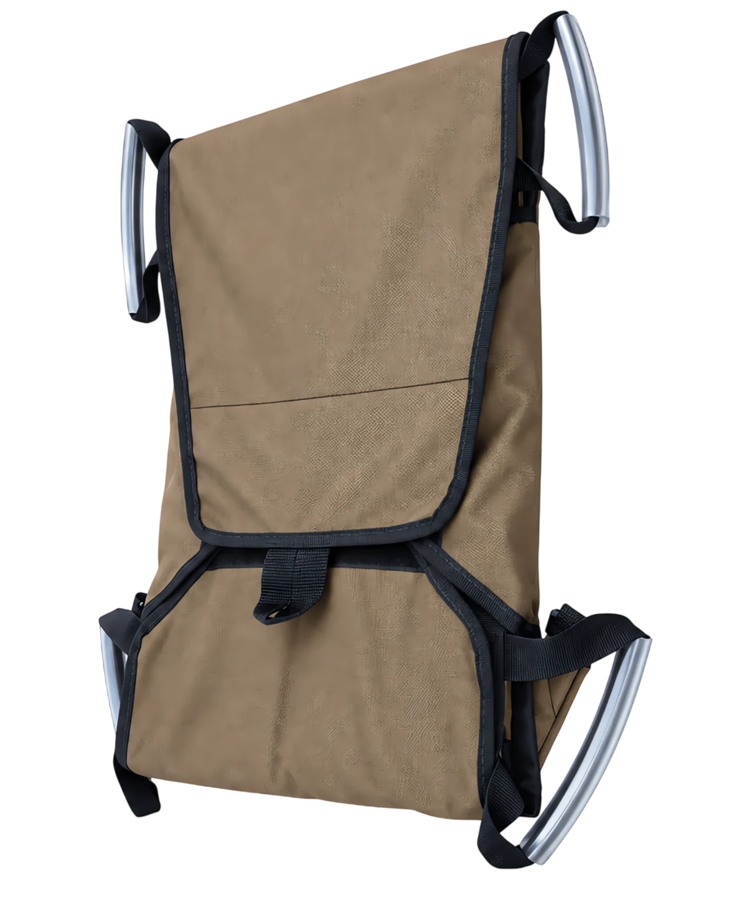
Достаточно открыть клапан и потянуть за ручки в стороны. Носилки раскрываются из чехла на спине пострадавшего и принимают нужное положение.
Подготовка к эвакуации двумя людьми занимает 10 секунд.
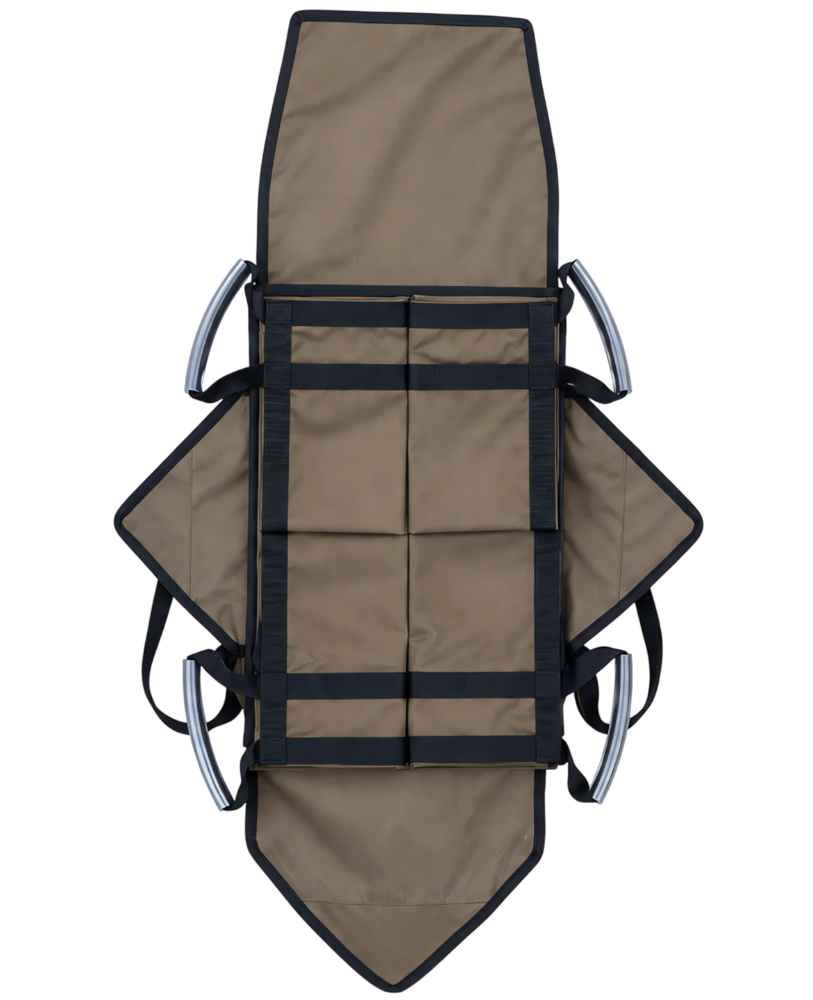
Собрал MVP и провёл 15 стресс-тестов. За 1 месяц прошли 4 итерации изменений по результатам проверок.
После первого теста оказалось, что при раскрытии человек не полностью помещается на носилках. Доработали укладку в чехол, чтобы при разворачивании они сразу принимали нужное положение. Добавили дренажные отверстия, чтобы не скапливалась жидкость.
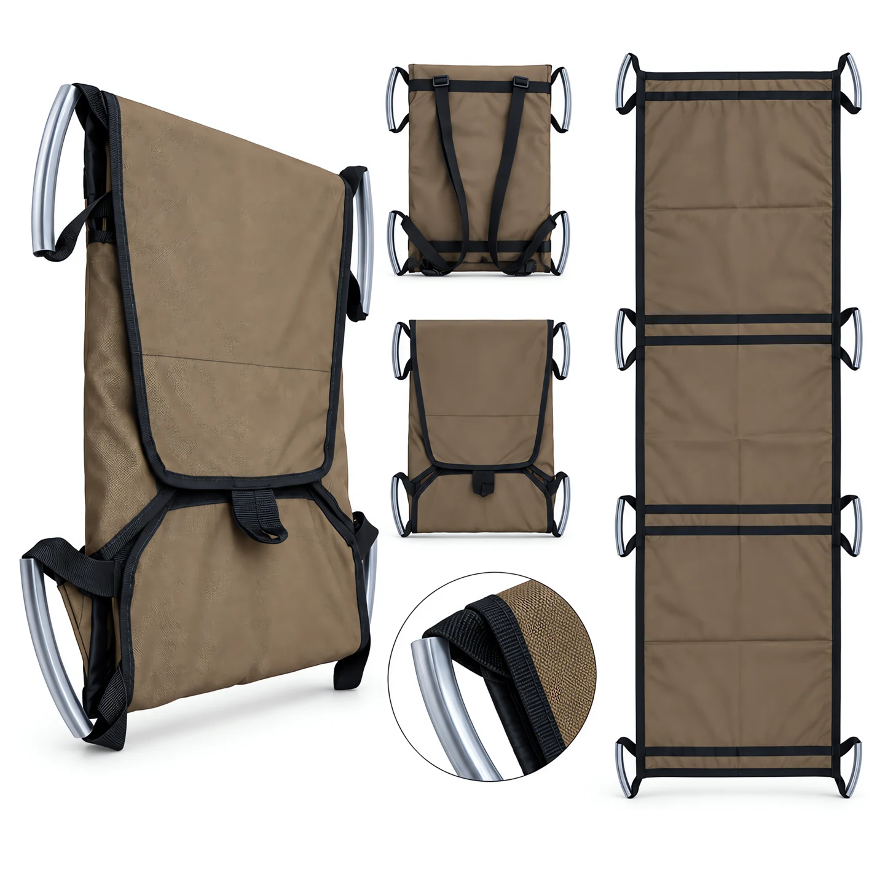
Получили заказ на изготовление. Первая партия из 50 носилок отправилась спасать жизни.
Банка газировки, которая отправилась на МКС. Организовал изготовление рекламного макета под ограничения космического запуска.
В рамках рекламной интеграции на ракете «Союз» понадобился физический макет банки газировки для отправки на МКС.
Нужно было срочно организовать производство, сохранить внешний вид банки и пройти проверку на допуск к полёту.
Для этого макета действовали ограничения по материалам: алюминий и пластик использовать было нельзя. Допустимый вес — не более 50 г.
Выбрали картон, бумагу и натуральные клеи. Из них нужно было получить узнаваемую форму банки и подготовить изделие к проверке.
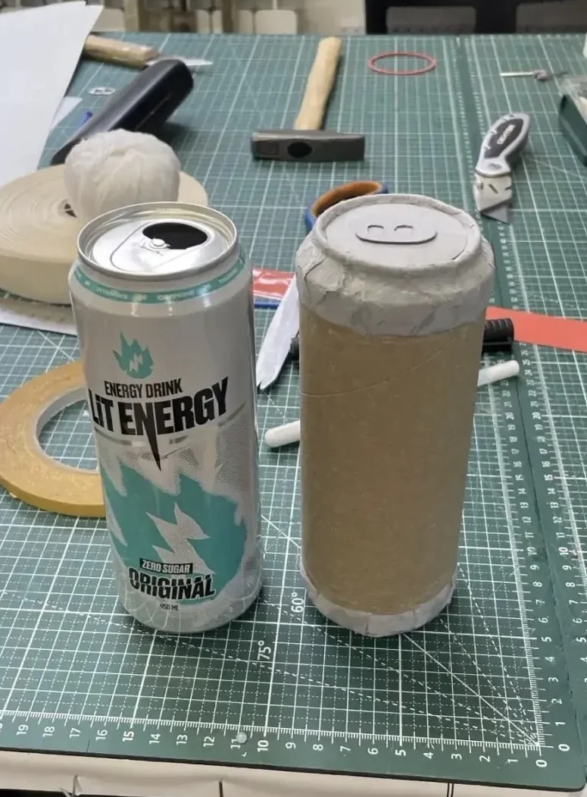
Протестировали 5 методов формовки, чтобы получить форму банки и уложиться в ограничение по весу.
Отдельно согласовывали каждый компонент: от картона до краски на этикетке. Для всех материалов собрали сертификаты безопасности.
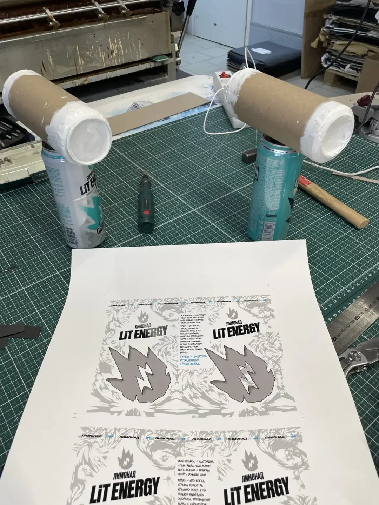
Готовый макет прошёл сертификацию в Институте медико-биологических проблем РАН и получил допуск к полёту.
После согласований банка отправилась на МКС в рамках запуска ракеты «Союз» с Байконура.
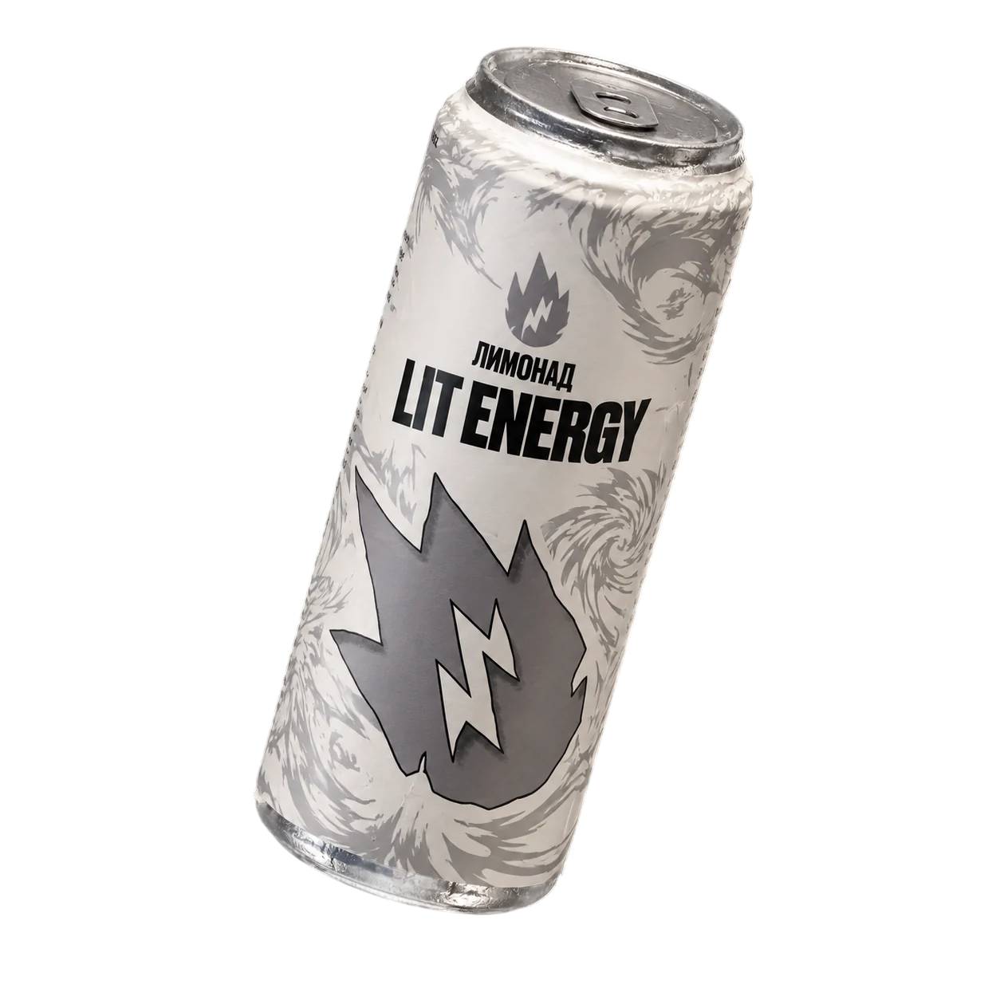
Я искал контакты людей из других компаний, к которым можно обратиться за рефералкой на вакансию продакт-менеджера. Холодные сообщения через LinkedIn и открытые контакты давали мало отклика.
Друг из банка рассказал, что они играют с коллегами и иногда с руководителями, но договориться об удобном времени сложно. Я подумал: можно собрать коммьюнити вокруг продукта, который поможет людям планировать совместные игры.
Сформулировал минимальный функционал вокруг договорённости о совместной игре: вход через Telegram, профиль с компанией и должностью, каталог игр, слоты, приглашения и комната сбора.
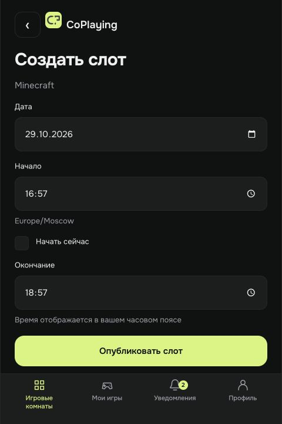
С Codex и Figma через MCP спроектировал библиотеку компонентов и проработал пользовательские сценарии: регистрацию, поиск компании, создание слота, приглашения и сбор участников.
Спроектировал 111 первичных состояний экранов и сделал кликабельные прототипы пользовательских сценариев.
Организовал рабочее пространство: локальное хранилище документации и версий, Git и GitHub для хранения версий кода. Развернул Mini App на Amvera Cloud, подключил PostgreSQL.
Разрабатывал продукт с Codex: ставил задачи по сценариям, проверял реализацию и последовательно выпускал вход, слоты, приглашения, напоминания и аналитику. Приёмку строил вокруг пользовательского пути.
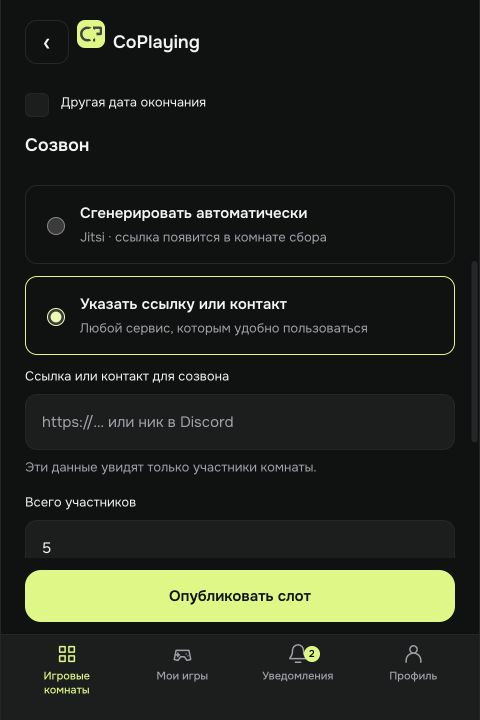
Для юзабилити-тестов обращался к целевой аудитории — сотрудникам корпораций, которые играют в игры. Решения о правках принимал по результатам тестирования.
В основу сценариев заложил поведенческие гипотезы:
Определил список продуктовых метрик для контроля работы Mini App:
Сделал внутренний дашборд для контроля метрик с фильтрами по датам, играм и типам слотов. Использую его, чтобы наблюдать поведение пользователей и выбирать следующие изменения.
Открыть Mini App